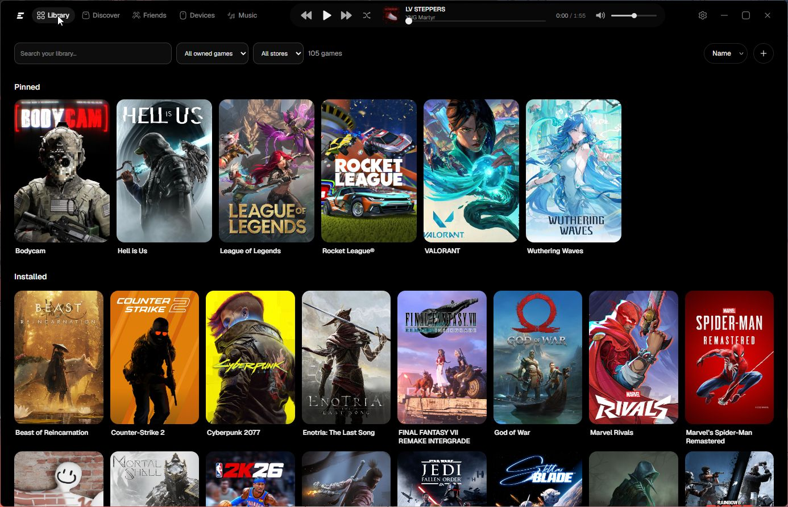
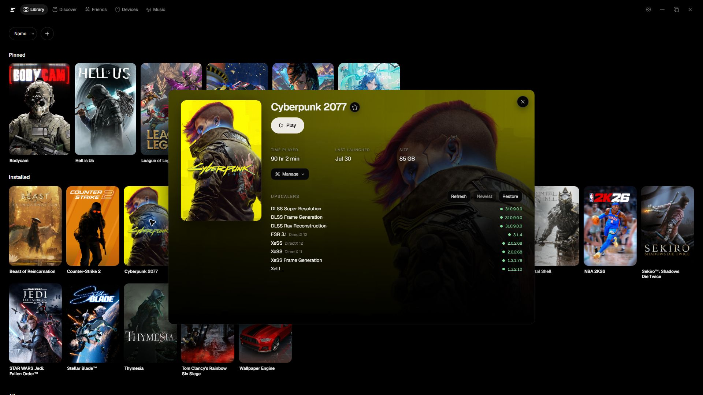
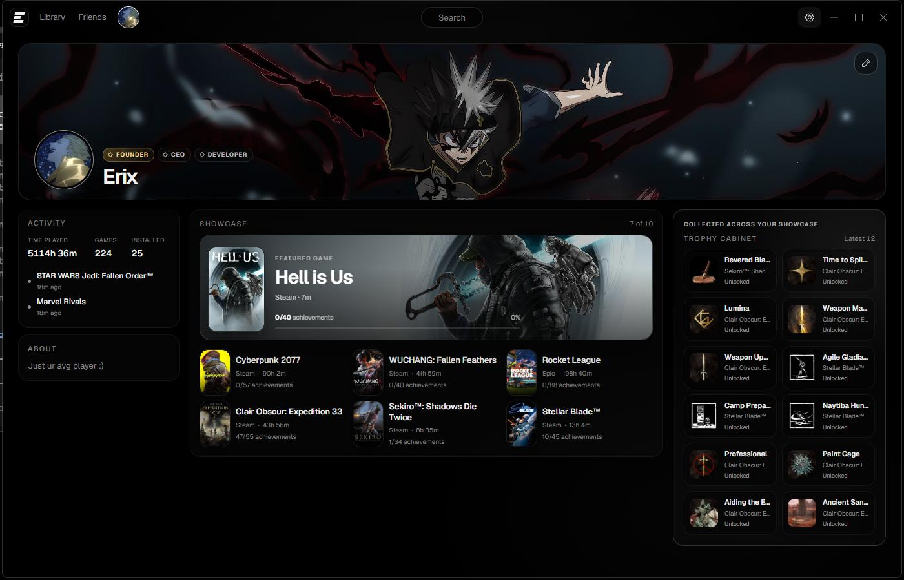
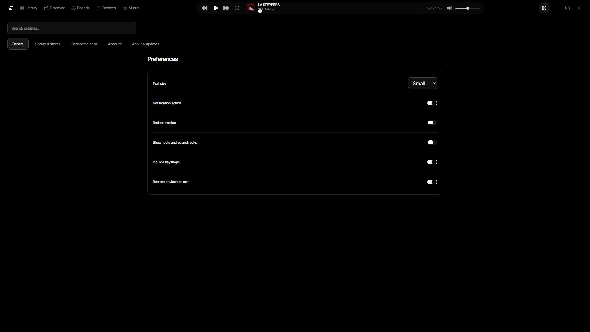

Real Exo profiles
Email/password accounts, handles, privacy, uploaded avatars and banners, galleries, badges, friend requests, blocking, and friends-only presence.
One home. Install, update, and play Steam, Epic, GOG, Riot, and portable Windows games. The other clients stay out of the way.
Version 2.0.3
Download for Windows 11Online identity and friends without putting the network in front of your library.
Email/password accounts, handles, privacy, uploaded avatars and banners, galleries, badges, friend requests, blocking, and friends-only presence.
Exclusive linked store identities, refund-aware actions, unknown provider states, and safer Steam, Epic, GOG, and Riot integration.
High-resolution recoverable art, local replace/refetch/report controls, account-scoped achievements, secure icons, and profile trophies.
Virtualized libraries, persistent caches, preloaded tools and art, compact search, controller navigation, and a 112px active Now dock.
Signed-vendor validation, semantic version truth, official-source preference, guarded restore, and neutral unusable states.
D1 profiles and friendships, R2 media, per-user Durable Object presence, strict privacy, and offline fail-open local behavior.
Google sign-in and email magic links require real provider credentials and are not enabled. Email/password accounts are live.



